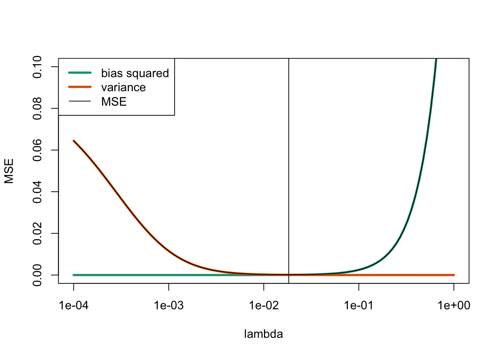

Section 12 Ridge Regression
In cases where \(X\) shows approximate multicollinearity, the parameter estimates \(\hat\beta\) have coefficients with large variance. In case of exact multicollinearity, \(\hat\beta\) is no longer uniquely defined, and the minimum of the residual sum of squares is attained on an (unbounded) subspace of the parameter space. In both cases, a more stable estimate can be obtained by changing the estimation procedure to include an additional penalty term which discourages “large” values of \(\hat\beta\). This is the idea of ridge regression. In this section we will see that the resulting estimates are biased, but sometimes have smaller mean squared error than the least squares estimator.
12.1 Definition the Estimator
Definition 12.1 In multiple linear regression, the ridge regression estimate for the parameter vector \(\beta\) is given by \[\begin{equation} \hat\beta^{(\lambda)} = \mathop{\mathrm{arg\,min}}\limits_\beta \Bigl( \sum_{i=1}^n \bigl( y_i - (X \beta)_i \bigr)^2 + \lambda \|\beta\|^2 \Bigr). \end{equation}\] The parameter \(\lambda \geq 0\) is called the regularisation parameter.
Here we write \(\mathop{\mathrm{arg\,min}}\limits\nolimits_\beta (\cdots)\) to denote the value of \(\beta\) which minimises the expression on the right-hand side, and \(\|\beta\|\) denotes the Euclidean norm of the vector \(\beta\), i.e. \[\begin{equation*} \|\beta\|^2 = \sum_{j=0}^p \beta_j^2. \end{equation*}\]
The term being minimised is \[\begin{equation*} r^{(\lambda)}(\beta) = \sum_{i=1}^n \bigl( y_i - (X \beta)_i \bigr)^2 + \lambda \|\beta\|^2, \end{equation*}\] consisting of the residual sum of squares plus a penalty term. The regularisation parameter \(\lambda\) controls the relative weight of these two terms. For large \(\lambda\), the main objective to minimise the norm \(\|\beta\|\) and one can show that \(\lim_{\lambda \to\infty} \hat\beta^{(\lambda)} = 0\). For \(\lambda \downarrow 0\) only the residual sum of squares is left and if \(X^\top X\) is invertible we get \(\hat\beta^{(0)} = \hat\beta\), i.e. here the ridge regression estimate coincides with the least squares estimate.
As in lemma 2.1 we can find an explicit formula for the ridge regression estimate. For this we write \(r^{(\lambda)}\) as \[\begin{equation*} r^{(\lambda)} = (y - X\top \beta)^\top (y - X\top \beta ) + \lambda \beta^\top \beta \end{equation*}\] and then take derivatives to find the minimum. The result is given by \[\begin{equation} \hat\beta^{(\lambda)} = (X^\top X + \lambda I)^{-1} X^\top y. \tag{12.1} \end{equation}\]
Example 12.1 To illustrate the method, we compute the ridge regression estimate for a badly conditioned toy dataset.
# fix the true parameters for our simulated data:
beta <- c(0, .5, .5)
sigma <- 0.01
set.seed(20211112)
x1 <- c(1.01, 2.00, 2.99, 4.02, 5.01, 5.99)
x2 <- c(0.98, 1.99, 3.00, 4.00, 4.99, 6.00)
# beta[1] in R corresponds to \beta_0, beta[2] = \beta_1, beta[3] = \beta_2
y <- beta[1] + beta[2] * x1 + beta[3] * x2 + rnorm(6, 0, sigma)
lambda <- 0.01
X <- model.matrix(y ~ x1 + x2)
beta.ridge <- solve(t(X) %*% X + lambda * diag(ncol(X)), t(X) %*% y)
beta.ridge[,1] # get first column instead of n × 1 matrix, for tidiness(Intercept) x1 x2
-0.01620501 0.52739367 0.47343531 For comparison, we also compute the least squares estimate:
(Intercept) x1 x2
-0.02935851 1.03064453 -0.02749857 We see that despite the small value of \(\lambda\) there is a considerable difference between the estimated values \(\hat\beta\) and \(\hat\beta^{(\lambda)}\) in this example. Experimenting with different values of the seed also shows that the variance of \(\hat\beta^{(\lambda)}\) is much smaller than the variance of \(\hat\beta\). In the next section we will see a theoretical explanation for this fact.
For \(\lambda > 0\) and \(v \neq 0\) we have \(\|v\| > 0\) and thus \[\begin{align*} \| (X^\top X + \lambda I) v \|^2 &= v^\top (X^\top X + \lambda I)^\top (X^\top X + \lambda I) v \\ &= v^\top X^\top X X^\top X v + 2 \lambda v^\top X^\top X v + \lambda^2 v^\top v \\ &= \| X X^\top X v \|^2 + 2 \lambda \| X v \|^2 + \lambda^2 \| v \|^2 \\ &\geq \lambda^2 \| v \|^2 \\ &> 0. \end{align*}\] This shows, by theorem A.1, that the matrix \(X^\top X + \lambda I\) is invertible for every \(\lambda > 0\). Thus the ridge regression estimate for \(\lambda > 0\) is always uniquely defined, even in cases where the least squares estimate is not uniquely defined.
There are variants of the method where the penalty term \(\|\beta\|^2\) is is replaced with a different penalty term. One example of this is Lasso (least absolute shrinkage and selection operator) regression, which uses \(\|\beta\|_1 = \sum_{j=0}^p |\beta_j|\) as the penalty term.
Outside statistics, ridge regression is known as Tikhonov regularisation.
12.2 Properties of the Estimate
Using the statistical model \[\begin{equation*} Y = X \beta + \varepsilon \end{equation*}\] as before, we have \[\begin{align*} \hat\beta^{(\lambda)} &= (X^\top X + \lambda I)^{-1} X^\top Y \\ &= (X^\top X + \lambda I)^{-1} X^\top (X \beta + \varepsilon) \\ &= (X^\top X + \lambda I)^{-1} (X^\top X + \lambda I) \beta \\ &\hskip15mm - (X^\top X + \lambda I)^{-1} \lambda I \beta \\ &\hskip15mm + (X^\top X + \lambda I)^{-1} X^\top \varepsilon \end{align*}\] and simplifying the first term on the right-hand side we get \[\begin{equation} \hat\beta^{(\lambda)} = \beta - \lambda (X^\top X + \lambda I)^{-1} \beta + (X^\top X + \lambda I)^{-1} X^\top \varepsilon. \tag{12.2} \end{equation}\]
12.2.1 Bias
Using the formula for \(\hat\beta^{(\lambda)}\) we get \[\begin{equation*} \mathbb{E}\bigl( \hat\beta^{(\lambda)} \bigr) = \beta - \lambda (X^\top X + \lambda I)^{-1} \beta + 0 \end{equation*}\] and thus \[\begin{equation*} \mathop{\mathrm{bias}}\bigl( \hat\beta^{(\lambda)} \bigr) = - \lambda (X^\top X + \lambda I)^{-1} \beta. \end{equation*}\] Since this term in general is non-zero, we see that \(\hat\beta^{(\lambda)}\) is a biased estimate. The amount of bias depends on the unknown, true coefficient vector \(\beta\).
12.2.2 Variance
The covariance matrix of the vector \(\hat\beta^{(\lambda)}\) is given by \[\begin{align*} \mathop{\mathrm{Cov}}\bigl(\hat\beta^{(\lambda)}\bigr) &= \mathop{\mathrm{Cov}}\Bigl( \beta - \lambda (X^\top X + \lambda I)^{-1} X^\top X \beta + (X^\top X + \lambda I)^{-1} X^\top \varepsilon \Bigr) \\ &= \mathop{\mathrm{Cov}}\Bigl( (X^\top X + \lambda I)^{-1} X^\top \varepsilon \Bigr) \\ &= (X^\top X + \lambda I)^{-1} X^\top \mathop{\mathrm{Cov}}(\varepsilon) X (X^\top X + \lambda I)^{-1} \\ &= \sigma^2 (X^\top X + \lambda I)^{-1} X^\top X (X^\top X + \lambda I)^{-1} \\ &= \sigma^2 (X^\top X + \lambda I)^{-1} - \lambda \sigma^2 (X^\top X + \lambda I)^{-2}. \end{align*}\] While this is an explicit formula, the resulting covariance matrix depends on the unknown error variance \(\sigma^2\).
If \(X^\top X\) is invertible, this covariance will convert to the covariance of the least squares estimator as \(\lambda \downarrow 0\). From this we can find the variance of individual components as \(\mathop{\mathrm{Var}}\bigl( \hat\beta^{(\lambda)}_j \bigr) = \mathop{\mathrm{Cov}}( \hat\beta^{(\lambda)} )_{jj}\).
12.2.3 Mean Squared Error
The Mean Squared Error (MSE) of an estimator \(\hat \beta_j\) for \(\beta_j\) is given by \[\begin{equation*} \mathop{\mathrm{MSE}}\nolimits( \hat\beta_j ) = \mathbb{E}\Bigl( \bigl( \hat\beta_j - \beta_j \bigr)^2 \Bigr). \end{equation*}\] It is an easy exercise to show that this can equivalently be written as \[\begin{equation*} \mathop{\mathrm{MSE}}\nolimits\bigl( \hat\beta_j \bigr) = \mathop{\mathrm{Var}}\bigl( \hat\beta_j \bigr) + \mathop{\mathrm{bias}}\bigl( \hat\beta_j \bigr)^2. \end{equation*}\] Using the formulas for the variance and bias from above, we can find an formula for \(\mathop{\mathrm{MSE}}\nolimits(\hat\beta^{(\lambda)}_j)\), but the result is hard to interpret. Instead of considering these analytical expressions, we illustrate the MSE using a numerical example.
Example 12.2 Continuing from example 12.1 above, we can determine the MSE for every value of \(\lambda\). Here we use the fact that this is simulated data where we know the true values of \(\beta\) and \(\sigma^2\).
We start with the bias:
[,1]
(Intercept) 0.0009178679
x1 0.0497789499
x2 0.0499545553For the covariance matrix we get the following:
C1 <- solve(Q) # Compute the inverse Q^{-1} ...
C2 <- C1 %*% C1 # ... and also Q^{-2}, to get
sigma^2 * (C1 - lambda*C2) # the covariance matrix. (Intercept) x1 x2
(Intercept) 7.291379e-05 -7.580602e-06 -9.226941e-06
x1 -7.580602e-06 3.831264e-06 -1.540098e-06
x2 -9.226941e-06 -1.540098e-06 4.221464e-06Now we repeat these calculations in a loop, to plot the MSE as a function of \(\lambda\):
lambda <- 10^seq(-4, 0, length.out = 100) # range of lambda to try
j.plus.1 <- 1 + 1 # we plot the error of \beta_1
variance <- numeric(length(lambda))
bias <- numeric(length(lambda))
for (i in seq_along(lambda)) {
lambda.i <- lambda[i]
Q <- t(X) %*% X + lambda.i * diag(ncol(X))
C1 <- solve(Q)
bias[i] <- (lambda.i * solve(Q, t(X) %*% X %*% beta))[j.plus.1]
C2 <- C1 %*% C1
C <- C1 - lambda.i*C2
variance[i] <- sigma^2 * C[j.plus.1, j.plus.1]
}
MSE <- variance + bias^2
plot(lambda, MSE, type = "l", log = "x", ylim = c(0, 0.1))
lines(lambda, bias^2, col="#1b9e77", lw = 3)
lines(lambda, variance, col="#d95f02", lw = 3)
lines(lambda, MSE) # make sure MSE is not obscured by bias/variance
abline(v = lambda[which.min(MSE)]) # mark the minimum
legend("topleft",
c("bias squared", "variance", "MSE"),
col = c("#1b9e77", "#d95f02", "black"),
lw = c(3, 3, 1))
The vertical line at \(\lambda = 0.0183\) marks the optimal value of \(\lambda\). We can see that for small \(\lambda\) the MSE is dominated by the variance, whereas for large \(\lambda\) the main contribution is from the bias.
12.3 Standardisation
While ridge regression can be applied directly to the original data, the penalty is only comparable between the components of \(\beta\), if the components have similar magnitude. Also, we do not want a method which is depends on the units in which the \(x\) variables are measured. To address these issues, it is common practice to first standardise each of the \(x\). In this way the penalty will apply equally to all of the coefficients, and the results can be transformed back to obtain \(\hat{y}\) on the original scale.
We standardise every column of the input separately: For the input variable \(x_j\), where \(j\in\{1, \ldots, p\}\), we get \[\begin{equation*} w_{ij} := \frac{x_{ij} - \overline{x_j}}{\mathrm{s}_{x_j}}, \end{equation*}\] for all \(i \in \{1, \ldots, n\}\). where \(\overline{x_j} = \frac1n \sum_{i=1}^n x_{ij}\) and \[\begin{equation*} \mathrm{s}_{x_j}^2 = \frac{1}{n-1} \sum_{i=1}^n (x_{ij} - \overline{x_j})^2 \end{equation*}\] is the sample variance. We similarly standardise the outputs: \[\begin{equation*} z_i := \frac{y_i - \overline{y}}{\mathrm{s}_y}, \end{equation*}\] where \(\overline{y}\) and \(\mathrm{s}_y\) are the mean and standard deviation of the \(y_i\). If we denote the regression coefficients for the transformed data by \(\gamma\), then the residual sum of squares for the transformed data is \[\begin{equation*} r_\mathrm{tfm}(\gamma) = \sum_{i=1}^n \bigl(z_i - \gamma_0 - \gamma_1 w_{i1} - \cdots - \gamma_p w_{ip} \bigr)^2. \end{equation*}\]
The transformed inputs satisfy \[\begin{equation*} \sum_{i=1}^n w_{ij} = 0 \end{equation*}\] for all \(j\in\{1, \ldots, p\}\) and a similar relation holds for the output. Using these relations we find \[\begin{align*} r_\mathrm{tfm}(\gamma) &= \sum_{i=1}^n \Bigl( \bigl( z_i - \gamma_1 w_{i1} - \cdots - \gamma_p w_{ip} \bigr)^2 \Bigr. \\ &\hskip2cm \Bigl. - 2 \gamma_0 \bigl( z_i - \gamma_1 w_{i1} - \cdots - \gamma_p w_{ip} \bigr) + \gamma_0^2 \Bigr) \\ &= \sum_{i=1}^n \bigl( z_i - \gamma_1 w_{i1} - \cdots - \gamma_p w_{ip} \bigr)^2 \\ &\hskip2cm - 2 \gamma_0 \sum_{i=1}^n \bigl( z_i - \gamma_1 w_{i1} - \cdots - \gamma_p w_{ip} \bigr) + n \gamma_0^2 \\ &= \sum_{i=1}^n \bigl( z_i - \gamma_1 w_{i1} - \cdots - \gamma_p w_{ip} \bigr)^2 \\ &\hskip2cm - 2 \gamma_0 \Bigl( \sum_{i=1}^n z_i - \gamma_1 \sum_{i=1}^n w_{i1} - \cdots - \gamma_p \sum_{i=1}^n w_{ip} \Bigr) + n \gamma_0^2 \\ &= \sum_{i=1}^n \bigl( z_i - \gamma_1 w_{i1} - \cdots - \gamma_p w_{ip} \bigr)^2 + n \gamma_0^2. \end{align*}\] Thus, the coefficient for the intercept can be minimised separately and the optimal value is always \(\gamma_0 = 0\). For this reason we do not include the intercept in our model for the standardised data. The design matrix is thus \[\begin{equation*} W = \begin{pmatrix} w_{1,1} & \cdots & w_{1,p} \\ w_{2,1} & \cdots & w_{2,p} \\ \vdots & \ddots & \vdots \\ w_{n,1} & \cdots & w_{n,p} \end{pmatrix} \in \mathbb{R}^{n\times p}, \end{equation*}\] and the reduced coefficient vector is \(\gamma \in \mathbb{R}^p\). The least squares estimator for the transformed data is then given by \[\begin{equation*} \hat\gamma = (W^\top W)^{-1} W^\top z \end{equation*}\] and the ridge regression estimate is given by \[\begin{equation*} \hat\gamma^{(\lambda)} = (W^\top W + \lambda I)^{-1} W^\top z. \end{equation*}\]
To transform back regression estimates obtained for the transformed data, we need to revert the standardisation: we have \[\begin{equation*} x_{ij} = \mathrm{s}_{x_j} w_{ij} + \overline{x_j} \end{equation*}\] and \[\begin{equation*} y_i = \mathrm{s}_y z_i + \overline{y}. \end{equation*}\] To obtain fitted values for an input \((\tilde x_1, \ldots, \tilde x_p)\) we have to first transform these inputs: \(\tilde w_j = (\tilde x_j - \overline{x_j}) / \mathrm{s}_{x_j}\). Note that the mean and standard deviation come from the data used to fit the model, and are not computed from the \(\tilde x_i\). We then find the model mean for the transformed data: \[\begin{align*} \hat z &= \sum_{j=1}^p \hat\gamma_j \tilde w_j \\ &= \sum_{j=1}^p \hat\gamma_j \frac{\tilde x_j - \overline{x_j}}{\mathrm{s}_{x_j}} \\ &= - \sum_{k=1}^p \frac{1}{\mathrm{s}_{x_k}} \hat\gamma_k \overline{x_k} + \sum_{j=1}^p \frac{1}{\mathrm{s}_{x_j}} \hat\gamma_j \tilde x_j. \end{align*}\] Finally, transforming back the response we get \[\begin{align*} \hat y &= \bigl( \overline{y} - \sum_{k=1}^p \frac{\mathrm{s}_y}{\mathrm{s}_{x_k}} \hat\gamma_k \overline{x_k} \bigr) + \sum_{j=1}^p \frac{\mathrm{s}_y}{\mathrm{s}_{x_j}} \hat\gamma_j \tilde x_j \\ &= \hat\beta_0 + \sum_{j=1}^p \hat\beta_j \tilde x_j, \end{align*}\] where \[\begin{equation*} \hat\beta_j = \frac{\mathrm{s}_y}{\mathrm{s}_{x_j}} \hat\gamma_j \end{equation*}\] for all \(j \in \{1, \ldots, p\}\) and \[\begin{equation*} \hat\beta_0 = \overline{y} - \sum_{k=1}^p \frac{\mathrm{s}_y}{\mathrm{s}_{x_k}} \hat\gamma_k \overline{x_k} = \overline{y} - \sum_{k=1}^p \hat\beta_k \overline{x_k}. \end{equation*}\] This transformation can be used both for least squares regression and ridge regression estimates.
Summary
- Ridge regression is an alternative estimator for the regression coefficients.
- The method is useful when multicollinearity is present.
- Often it is advantageous to standardise the data before performing ridge regression.